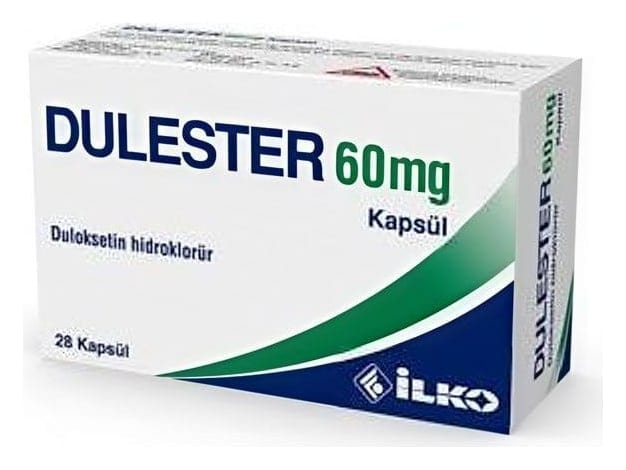

Dulester 60 mg Kapsül, 28 Adet

Ne için kullanılır
KT · Bölüm 1DULESTER, içerisinde bej renkli pelletler bulunan opak açık yeşil renkli gövdesi ve opak koyu mavi renkli kapağı olan sert jelatin kapsüldür. DULESTER 28 kapsüllük ambalajlar halinde bulunur.
DULESTER duloksetin etkin maddesini içeren bir ilaçtır. DULESTER sinir sistemindeki serotonin ve noradrenalin seviyelerini artırır.
DULESTER size (yetişkinlere), • Depresyon, • Diyabete bağlı nöropatik ağrı (Sinir hasarıyla oluşan diyabete bağlı nöropatik ağrı, bıçak saplanır gibi, iğne batması ve sızı şeklinde, zonklayıcı ve elektrik çarpması gibi kavramlarla tanımlanan ağrının tıp dilindeki kar şılığıdır. Ağrının olduğu bölgede his kaybı görülebilir veya sıcak, soğuk, basınç, dokunma gibi uyarılar ağrı hissine neden olabilir.), • Genel anksiyete bozukluğu (Genel anksiyete bozukluğu, sürekli endişeli ve sinirli hissetme halidir.),
• Fibromiyalji (Fibromiyalji özellikle sırt, boyun ve omuzlarda belirgin olmak üzere tüm vücutta görülebilen ve halsizliğin de eşlik edebildiği ağrı ile karakterize bir kas-iskelet sistemi rahatsızlığıdır.), • Kronik ağrı (Kemik, eklem veya kaslarda hissedilen kronik ağrı, devamlı hissedilen, nükseden gerilme hissi, ağrı ve/veya sertliktir.)
diye adlandırılan hastalıkların tedavisi için verilmiş bulunmaktadır.
DULESTER, depresyonu veya anksiyetesi olan kişilerin çoğunda iki hafta içinde etkisini göstermeye başlar, ancak kendinizi daha iyi hissedene kadar geçen bu süre 2-4 hafta kadar da olabilir. Kendinizi daha iyi hissettiğiniz dönemde de depresyonunuzun ve anksiyetenin tekrarlamasını önlemek için doktorunuz size DULESTER vermeye devam edebilir.
Diyabetik nöropatik ağrısı olan kişiler kendilerini iyi hissedene kadar bir kaç hafta geçebilir. Eğer tedaviye başladıktan iki ay sonra kendinizi iyi hissetmezseniz doktorunuzla konuşunuz.